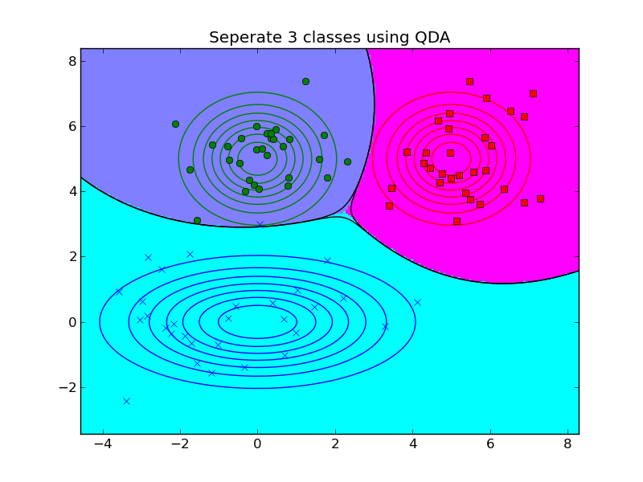
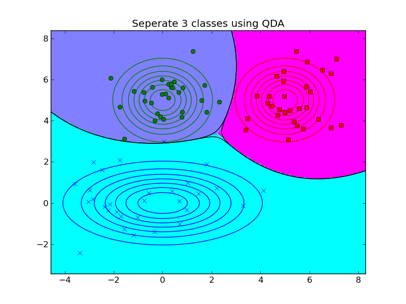

#!/usr/bin/env python
import numpy as np
import matplotlib.pylab as pl
from sklearn.lda import LDA
from sklearn.qda import QDA
c = 'bgr'
m = 'xos'
n_samples = 30 # number of each class samplesn
model_names = ('LDA', 'QDA')
def mvn2d(x, y, u, sigma):
"""calculate the probability of 2d-guss"""
xx, yy = np.meshgrid(x, y)
xy = np.c_[xx.ravel(), yy.ravel()]
sigma_inv = np.linalg.inv(sigma)
z = np.dot((xy - u), sigma_inv)
z = np.sum(z * (xy - u), axis=1)
z = np.exp(-0.5 * z)
z = z / (2 * np.pi * np.linalg.det(sigma) ** 0.5)
return z.reshape(xx.shape)
models = [([[1.5, 1.5], [-1.5, -1.5]], # means
[np.eye(2)] * 2 # sigmas[:, j].reshape(200, 200)
), # model 1
([[1.5, 1.5], [-1.5, -1.5]], # means
[[[1.5, 0], [0, 1]], np.eye(2) * 0.7] # sigmas
), # model2
([[0, 0], [0, 5], [5, 5]],
[np.eye(2)] * 3
), # model3
([[0, 0], [0, 5], [5, 5]],
[[[4, 0], [0, 1]], np.eye(2), np.eye(2)]
) # model4
]
for n_th, (u, sigma) in enumerate(models):
# generate random points
x = [] # store sample points
y = [] # store class labels
for i in range(len(u)):
x.append(np.random.multivariate_normal(u[i], sigma[i], n_samples))
y.append([i] * n_samples)
points = np.vstack(x)
labels = np.hstack(y)
x_min, y_min = np.min(points, axis=0)
x_max, y_max = np.max(points, axis=0)
x_range = np.linspace(x_min - 1, x_max + 1, 200)
y_range = np.linspace(y_min - 1, y_max + 1, 200)
xx, yy = np.meshgrid(x_range, y_range)
for k, model in enumerate((LDA(), QDA())):
#fit, predict
clf = model
clf.fit(points, labels)
z = clf.predict(np.c_[xx.ravel(), yy.ravel()])
z = z.reshape(200, 200)
z_p = clf.predict_proba(np.c_[xx.ravel(), yy.ravel()])
#draw areas and boundries
pl.figure()
pl.pcolormesh(xx, yy, z)
pl.cool()
for j in range(len(u)):
pl.contour(xx, yy, z_p[:, j].reshape(200, 200),
[0.5], lw=3, colors='k')
#draw points
for i, point in enumerate(x):
pl.plot(point[:, 0], point[:, 1], c[i] + m[i])
#draw contours
for i in range(len(u)):
prob = mvn2d(x_range, y_range, u[i], sigma[i])
cs = pl.contour(xx, yy, prob, colors=c[i])
pl.title('Seperate {0} classes using {1}'.
format(len(u), model_names[k]))
pl.savefig('discrimAnalysisDboundariesDemo_%d.png' % (n_th * 2 + k))
pl.show()


 
